機材
ダークバック
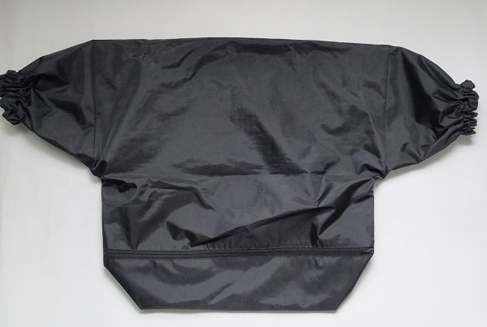
ﾌｲﾙﾑをﾘｰﾙに巻き付ける時に使用 左右の袖から手を入れて 手探りで行います。
ステンレス・タンク リール
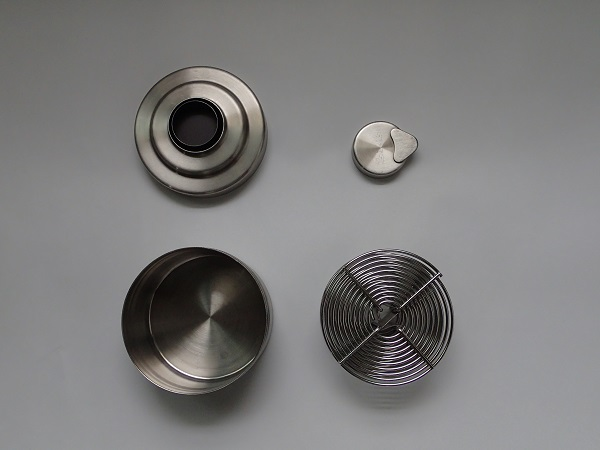
薬品に強いステンレスのリールとタンクです。
計量カップ 100均で購入
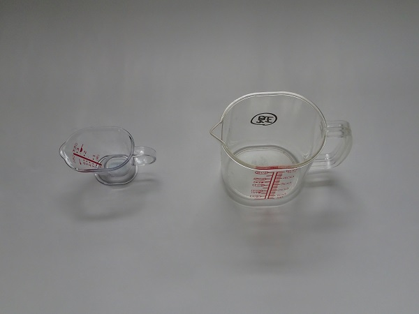
現像液なだを計る
フイルムクリップ
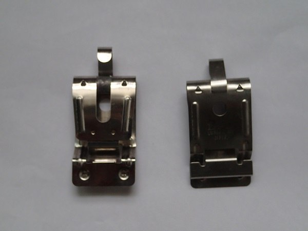
フイルムを乾かす為にフイルムを挟みつるせるようになっています、重りも入っています。
セーム皮（車洗車用）
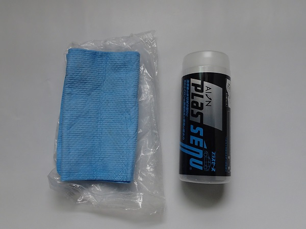
いろいろ試してみましたが 吸水力が有り埃もつかないのでとても良いです。フイルムを吊るした後これで水分をふき取ります。
温度計
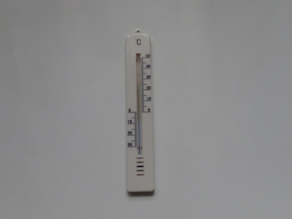
通常現像液は水道水で薄めますが、あまりに水道水の温度が低かった場合水温を測りながらポットのお湯などを入れて水温を調整する時に使用。 100均で購入
ハサミ
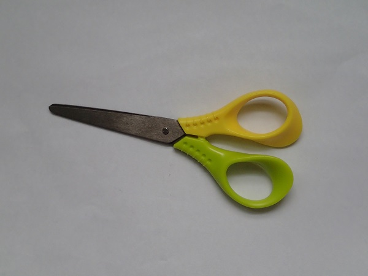
ダークバックの中でリールにフイルムを巻き付けた後 パトローネとフイルムを切り離すときに使用。あまり大きくない物 100均で購入
現像剤
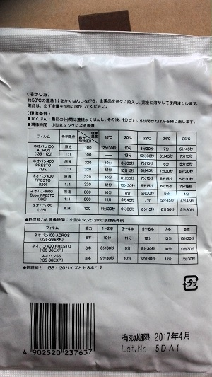
フジフイルムの”ミクロファイン”を使用 数百円です。 ｱﾏｿﾞﾝで購入
定着液
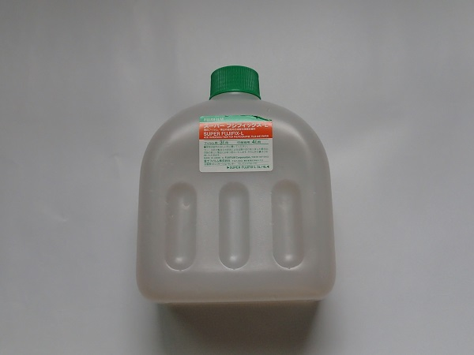
フジフイルムの”フジフィックス”を使用 数百円です。 ｱﾏｿﾞﾝで購入
白黒フイルム
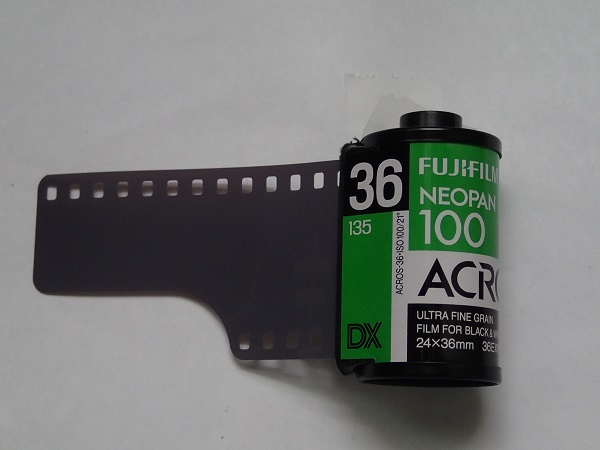
アクロスISO100を使用。 ｱﾏｿﾞﾝで購入
フイルムスキャナー
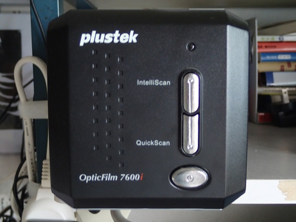
plustekのOpticFilm 7600iを使用。
フイルムスキャナー追加する古いｽｷｬﾅｰの動作がおかしくなる為
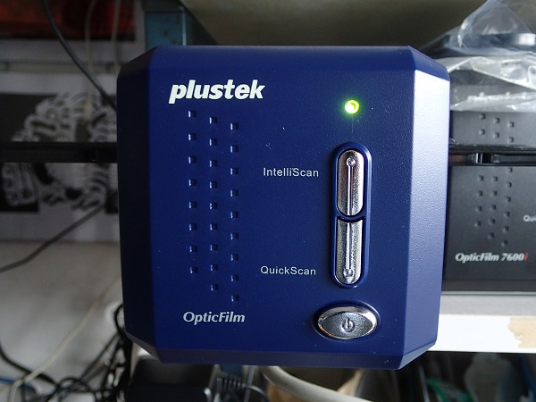
plustekのOpticFilm 8100 2016/10
フイルムカメラ
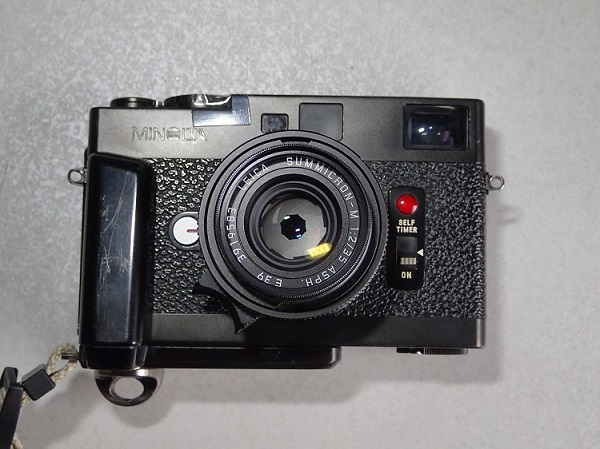
ﾐﾉﾙﾀCLE ほぼこの機材を使用 軽くて良く写る ﾀﾞｲﾔﾙがむやみ回らないようにｾﾛﾃｰﾌﾟで固定
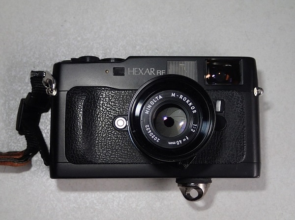
ｺﾆｶ・ﾍｷｻｰRF
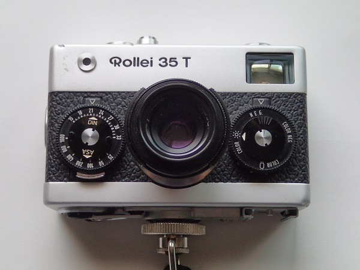
ﾛｰﾗｲ35
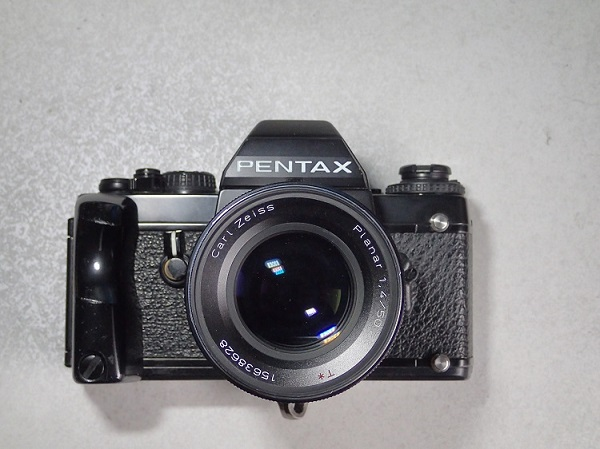
ﾍﾟﾝﾀｯｸｽLX
1970年代の一眼ﾚﾌ pentaxSP 使ってみた ﾓﾉｸﾛなんとか使えそう 2016/11
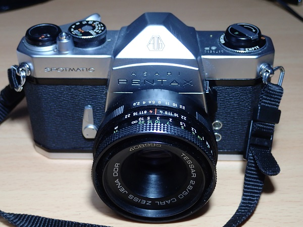
ﾍﾟﾝﾀｯｸｽSP ﾃｯｻｰ50mm
デジタルカメラ
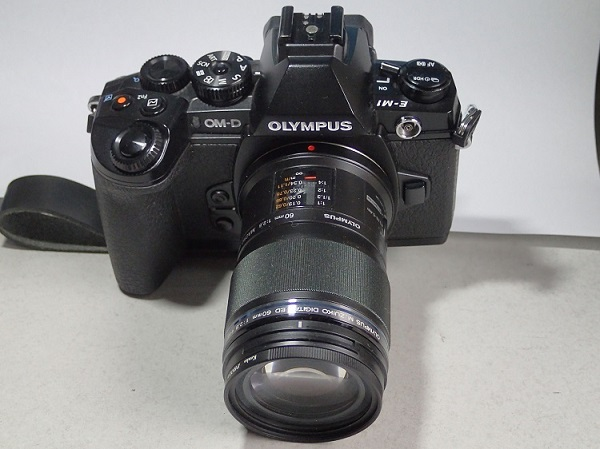
ｵﾘﾝﾊﾟｽE-M1 昆虫はほぼこの機材 野鳥も軽い
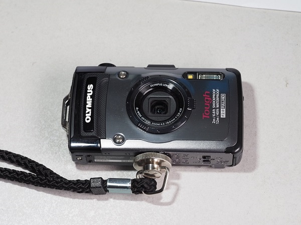
ｵﾘﾝﾊﾟｽTG1
ﾎｰﾑ